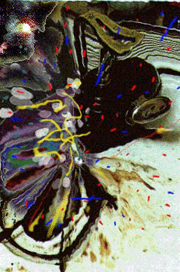

WHEN CAROL LEFT LIVERMORE it was like the opposite of hitting jackpot in Las Vegas. Fruits and numbers whirled and the moments were out of time: one-by-one but only a second apart the windows showed three sixes. Then drums dropped and floodgate chambers loosed an inundation of rage and dismay--I had to ask for one of those souvenir plastic tumblers to take the overflow brimming in cupped hands. The yield, instead of euphoria and money, was self-hatred and pain. This was me this was happening to. The wheel of chance had hit. Before my very eyes.
She went on to say she wanted a new life. Mama thinks I should go see the doctors. Kids on the block, full of instinct when it comes to sadness in their parents, their friends, treat me like I have cooties. Why she chose an ice cream shop I'll never know. Spoiled that treat for me forever. Seemed to enjoy her cone.